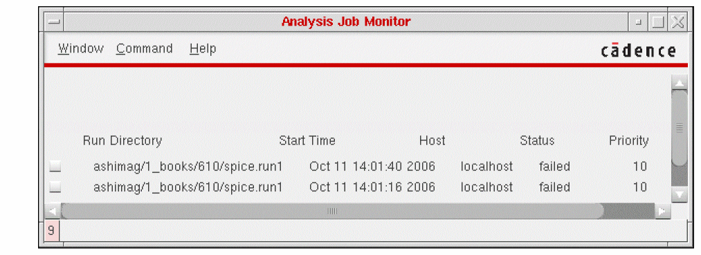
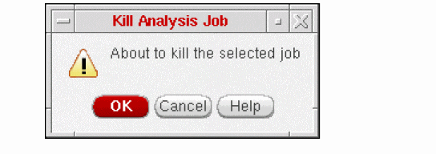

6
Controlling Job Status
This chapter covers the following topics:
- Accessing the Job Monitor Form
- Checking Current Simulation Status
- Adjusting Job Priority
- Terminating a Simulation
- Interrupting or Restarting a Simulation
- Editing the Job Monitor Form
For information on SE SKILL APIs, see the Digital Design Netlisting and Simulation SKILL Reference.
Accessing the Job Monitor Form
You can use the Job Monitor command to perform the following operations for a background analysis job:
To perform any of these functions
-
In the Schematic window, select Simulation – Job Monitor.
The following form window appears:
SE background analysis jobs appear in this form window whether or not you started them using the Simulation menu. - Click the jobs for which you want to run a Job Monitor command.
- Select the appropriate command from the Command menu.
- To close the Job Monitor form window, select Window – Close.
Checking Current Simulation Status
To bring up a window showing the run log (si.log) for the selected jobs
You can also display the run log of a background job with the Simulation – Show Outputs – Show Run Log commands. The Show Foreground Run Log option shows the log for a foreground job, and the Show Background Run Log option shows the log for a background job.
Adjusting Job Priority
To change the priority of the selected jobs
-
In the Job Monitor form window, select Command – Set Priority.
The following form appears:
-
Click and drag the bar in the Job Priority field.
Try to set an appropriate job priority before you start the job. Once a job has started, you can only decrease the priority of a job unless you have root access. (This is a UNIX requirement.) For example, to decrease the priority of a job set at 10, change it to 12. This slows down the background job and increases the speed of your local Cadence graphics shell. - Click OK.
Terminating a Simulation
To terminate the selected jobs
-
In the Job Monitor form window, select Command – Kill.
A dialog box asks you to confirm the job terminations. If you kill a job, you cannot resume it with the Continue command.

Interrupting or Restarting a Simulation
To resume the jobs you suspended with the Suspend command
Editing the Job Monitor Form
To remove the selected jobs from the Job Monitor form
-
In the Job Monitor form window, select Command – Remove Entry. A dialog box asks you to confirm the deletion.
Jobs you select are not terminated, but you can no longer change their priorities or terminate them. You can still see output from these simulations (with the Show Run Log command) if you first initialize the environment and specify their simulation run directories.
Return to top